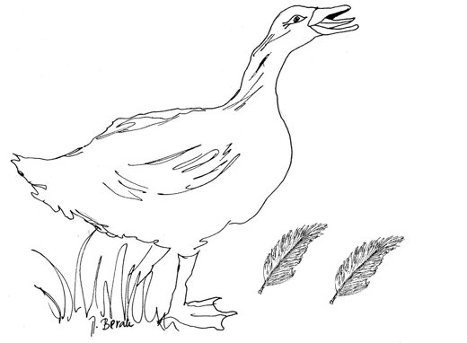

Guskin oglas
The Goose's Ad

Dajem svoja dva otpala peraza tri zrna kukuruza zrelai još jedno iz desnoga krilada bih što veća i deblja bila.
Two feathers that I've shed I'll give awayfor three ripe grains of maize, and I will payone more besides, out of my own right wing,to grow as big and plump as anything.
Šifra - fer trampa!
Code word: fair swap!
Translator's note. Croatian small ads ask for replies under a šifra, a code word; his verse ads were read out on local radio.